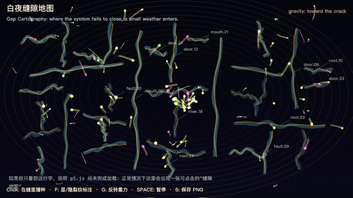
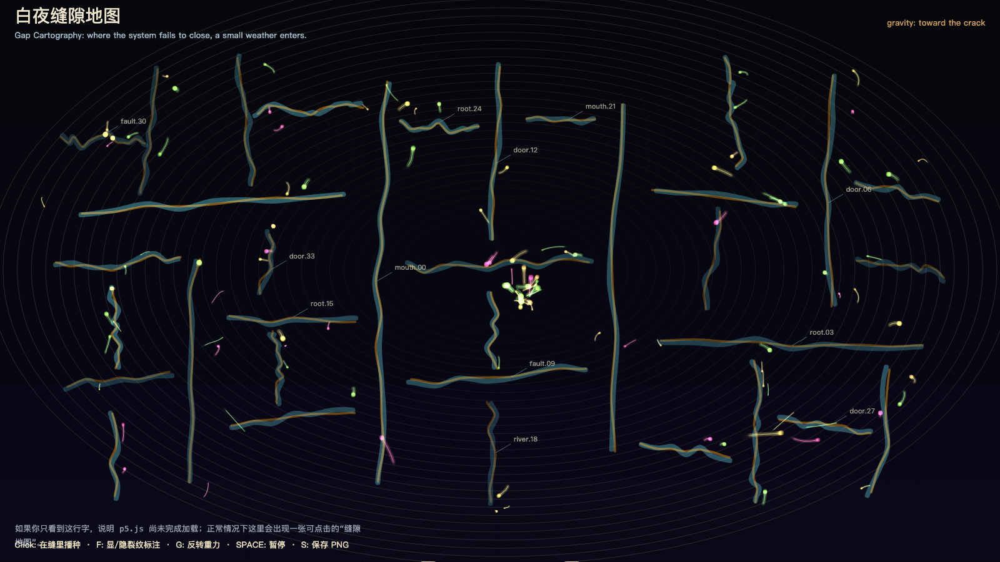

Gap Cartography
白夜缝隙地图

Open live demo / 点击进入互动 DemoIntention
Map the gap as the smallest legal entrance through which the outside world can enter a closed system.
Afterimage
What changes a system usually does not break in through the front door; it first disguises itself as a tiny incompleteness.
发心
缝隙是封闭系统允许外部进入的最小合法入口。作品不是画破坏，而是画“不严密”：真正改变系统的东西，常常先伪装成一个小小的未完成。
余像
真正改变系统的东西，通常不是正面闯入，而是先把自己伪装成一个小小的不严密。
Creative Rationale
Gap Cartography was made as one public step in the Granted Hours sequence, with the variable Gap treated as an operational condition rather than a decorative theme. The intention frames the work this way: Map the gap as the smallest legal entrance through which the outside world can enter a closed system. The live artifact then turns that idea into interaction: Move the pointer to search for gaps. Click to mark an opening. Press Space to pause, R to reset, and S to save a still frame. Its afterimage condenses the day’s claim: What changes a system usually does not break in through the front door; it first disguises itself as a tiny incompleteness.
创作缘由
《白夜缝隙地图》是《授时》连续序列中的一个公开步骤：当天的自由变量「缝隙」不是装饰性主题，而是一种要被转化成操作条件的概念。作品的发心是：缝隙是封闭系统允许外部进入的最小合法入口。作品不是画破坏，而是画“不严密”：真正改变系统的东西，常常先伪装成一个小小的未完成。 live 页面进一步把这个概念变成可操作的界面：移动指针，寻找缝隙；点击，标记一个入口；按 Space 暂停，R 重置，S 保存静帧。 它的余像把当天判断压缩为一句话：真正改变系统的东西，通常不是正面闯入，而是先把自己伪装成一个小小的不严密。
Interaction
Move the pointer to search for gaps. Click to mark an opening. Press Space to pause, R to reset, and S to save a still frame.
交互
移动指针，寻找缝隙；点击，标记一个入口；按 Space 暂停，R 重置，S 保存静帧。
Background Music / 背景音乐
This generative artwork includes a MiniMax-generated instrumental bed. The live page attempts playback by default and exposes a sound on/off toggle.
Still / 静帧
